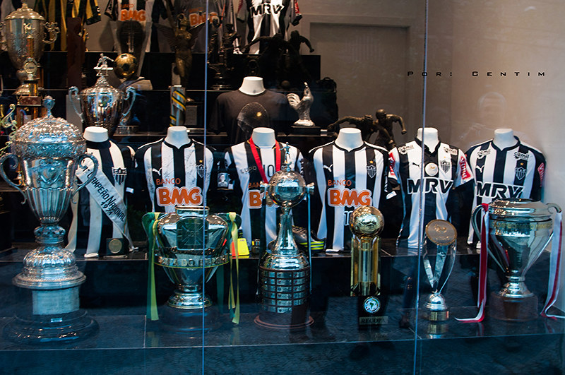

Hall de Conquistas Imortais
Desde sua fundação, o Clube Atlético Mineiro trilhou um caminho de glórias que se estende por diversas modalidades e categorias. Esta é a lista definitiva que celebra cada troféu que engrandece nossa história.
FUTEBOL PROFISSIONAL MASCULINO
Títulos Oficiais Internacionais
- 🏆 Copa Libertadores da América: 2013
- 🏆 Recopa Sul-Americana: 2014
- 🏆 Copa Conmebol: 1992, 1997 (Bicampeão)
Títulos Oficiais Nacionais
- 🏆 Campeonato Brasileiro: 1937 (Copa dos Campeões), 1971, 2021 (Tricampeão)
- 🏆 Copa do Brasil: 2014, 2021 (Bicampeão)
- 🏆 Supercopa do Brasil: 2022
- 🏆 Copa dos Campeões do Brasil: 1978
- 🏆 Campeonato Brasileiro - Série B: 2006
Títulos Oficiais Regionais e Estaduais
- 🏆 Campeonato Mineiro (50 títulos): 1915, 1926, 1927, 1931, 1932, 1936, 1938, 1939, 1941, 1942, 1946, 1947, 1949, 1950, 1952, 1953, 1954, 1955, 1956, 1958, 1962, 1963, 1970, 1976, 1978, 1979, 1980, 1981, 1982, 1983, 1985, 1986, 1988, 1989, 1991, 1995, 1999, 2000, 2007, 2010, 2012, 2013, 2015, 2017, 2020, 2021, 2022, 2023, 2024, 2025
- 🏆 Taça Minas Gerais (5 títulos): 1975, 1976, 1979, 1986, 1987
- 🏆 Copa dos Campeões Mineiros (2 títulos): 1974, 1999
- 🏆 Torneio Início (8 títulos): 1928, 1931, 1932, 1939, 1947, 1949, 1950, 1954
Torneios Amistosos e Preparatórios de Destaque
- 🏅 Torneio de Paris (França): 1982
- 🏅 Torneio de Amsterdã (Holanda): 1984
- 🏅 Torneio de Bilbao (Espanha): 1982
- 🏅 Torneio Ramón de Carranza (Espanha): 1990
- 🏅 Florida Cup (EUA): 2016
- 🏅 Copa Centenário de Belo Horizonte: 1997
FUTEBOL FEMININO
- 🏆 Campeonato Mineiro (10 títulos): 2006, 2009, 2010, 2011, 2012, 2020, 2021, 2022, 2023, 2024
CATEGORIAS DE BASE (O Futuro do Galo)
Principais Conquistas Sub-20
- 🏆 Campeonato Brasileiro Sub-20: 2020
- 🏆 Copa do Brasil Sub-20: 2017
- 🏆 Copa São Paulo de Futebol Júnior (3 títulos): 1975, 1976, 1983
- 🏆 Taça BH de Futebol Júnior (5 títulos): 1988, 1989, 1995, 1996, 2009, 2011
Principais Conquistas Sub-17
- 🏆 Copa do Brasil Sub-17: 2014
- 🏆 Taça BH de Futebol Júnior (antes Sub-20): 2005
OUTRAS MODALIDADES
Futebol Americano (Galo FA)
- 🏆 Brasil Bowl (5 títulos): 2017, 2018, 2019, 2022, 2023
- 🏆 BFA (Conferência Sudeste): 2017, 2018, 2019, 2022, 2023
Futsal
- 🏆 Campeonato Metropolitano (12 títulos)
- 🏆 Taça Brasil de Futsal: 1985, 1997, 1999
- 🏆 Liga Nacional de Futsal: 1997, 1999